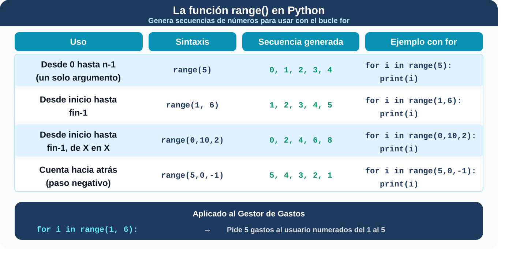
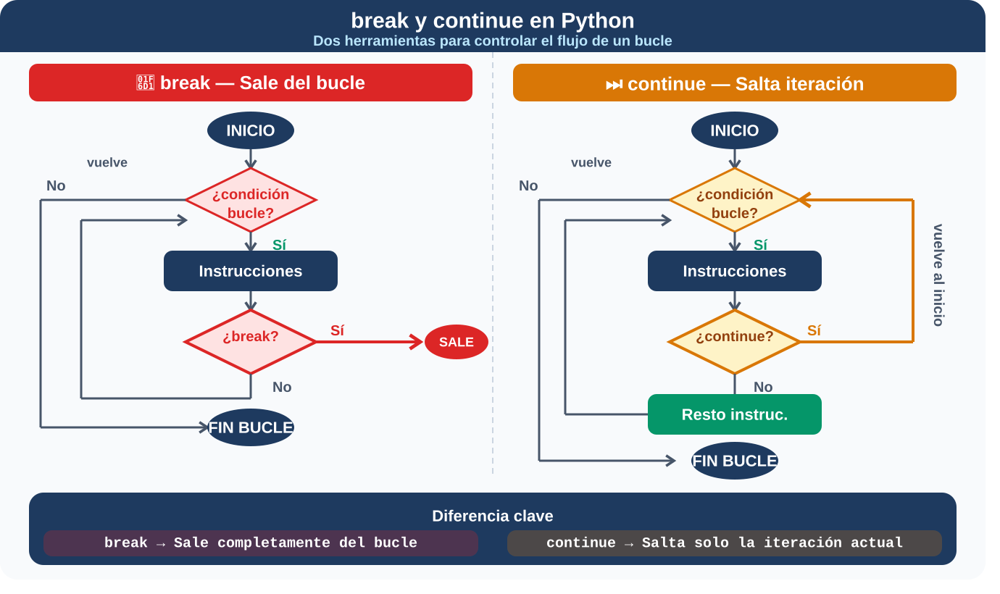
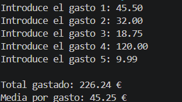
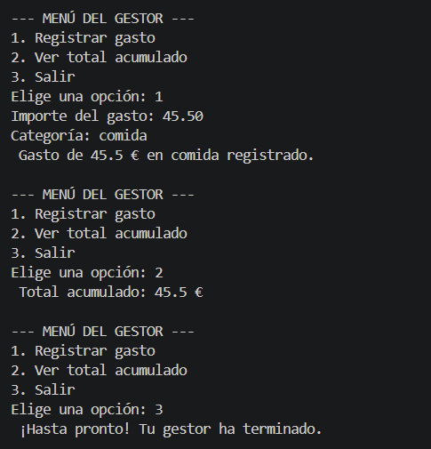

1. Estructuras iterativas
Imagina que llegas a casa con 10 tickets de compra en el bolsillo y quieres registrarlos en tu Gestor de Gastos. Con lo que sabemos hasta ahora, tendrías que escribir la instrucción input() diez veces seguidas en tu código, una debajo de otra. Y si un día traes 15 tickets, ¡el programa se quedaría corto!
Para solucionar esto de forma elegante, la programación estructurada nos ofrece los bucles o estructuras iterativas. Son bloques de código que se repiten a sí mismos de forma automática. En Python, utilizamos dos tipos principales dependiendo de lo que necesitemos:
FOR
Imagina que quieres mostrar el resumen de todos los gastos que has registrado en el mes. Sin bucles, tendrías que escribir un print() por cada gasto. Si tienes 20 gastos, 20 líneas de código. Si tienes 100, 100 líneas. Claramente eso no es programar bien.
Los bucles son la solución: permiten repetir un bloque de código automáticamente un número determinado de veces o para cada elemento de una colección. El bucle for es el más usado cuando sabes de antemano cuántas veces quieres repetir o cuando quieres recorrer una lista de elementos.
# Estructura básica
for variable in secuencia:
# bloque que se repiteEn el siguiente ejemplo podemos ver que la variable i toma automáticamente cada valor de la secuencia en cada repetición. Puedes llamarla como quieras, aunque i es la convención más habitual.
# Ejemplo: mostrar 5 mensajes
for i in range(5):
print(f"Gasto número {i+1} registrado")
La función range()
range() genera una secuencia de números que el for recorre uno a uno. Es una de las herramientas más usadas junto con los bucles:


WHILE
El bucle for es perfecto cuando sabes cuántas veces quieres repetir algo. Pero, ¿qué pasa cuando no lo sabes? Imagina el menú de tu Gestor de Gastos: no puedes saber cuántas veces el usuario querrá registrar un gasto antes de salir. Para eso existe el while.
La palabra while significa "mientras". El programa comprobará una condición y, si es verdadera (True), ejecutará el bloque de código indentado. Al terminar, volverá a subir para comprobar la condición otra vez. Y así sucesivamente hasta que la condición pase a ser falsa (False).
# Estructura básica
while condicion:
# bloque que se repiteEs perfecto para crear el Menú Principal de tu Gestor de Gastos. Queremos que el menú siga apareciendo mientras el usuario no pulse la opción de salir.
# El menú se repite hasta que el usuario elija salir
opcion = ""
while opcion != "3":
print("\n--- MENÚ DEL GESTOR ---")
print("1. Registrar gasto")
print("2. Ver total")
print("3. Salir")
opcion = input("Elige una opción: ")Si la condición del while nunca se vuelve False, el programa se queda atrapado en un bucle infinito y nunca termina. Asegúrate siempre de que algo dentro del bucle cambia el valor de la condición.
Contadores y acumuladores: los mejores amigos del bucle
Una de las aplicaciones más prácticas que le darás a la estructura while es utilizarla para llevar el recuento de lo que ocurre dentro de tu programa. Para ello, los programadores utilizamos dos variables con misiones muy específicas:
- El contador: como su propio nombre indica, es una variable que va incrementando su valor de 1 en 1. Su objetivo es averiguar cuántas veces ha ocurrido algo (por ejemplo, saber cuántos tickets de compra has registrado hoy).
- El acumulador: a diferencia del contador, esta variable no suma de 1 en 1, sino que almacena y va sumando cantidades diferentes para guardar un "total" progresivo (por ejemplo, ir sumando el dinero de cada ticket para calcular el gasto total del día).
¿Quieres ver cómo trabajan juntos? Fíjate en este pequeño programa para tu Gestor que utiliza un bucle while junto a un contador y un acumulador:
# Inicializamos las variables a cero antes de empezar
contador_tickets = 0
total_acumulado = 0.0
opcion = "Sí"
# El bucle se repite mientras el usuario diga "Sí"
while opcion == "Sí":
importe = float(input("Introduce el importe del ticket: "))
# ACUMULADOR: Al total que ya teníamos, le sumamos el nuevo importe
total_acumulado = total_acumulado + importe
# CONTADOR: Sumamos 1 a la cantidad de tickets registrados
contador_tickets = contador_tickets + 1
opcion = input("¿Quieres introducir otro ticket? (Sí/No): ")
# Cuando el usuario escribe "No", el bucle termina y mostramos el resultado final:
print("Hoy has registrado", contador_tickets, "tickets.")
print("El gasto total ha sido de", total_acumulado, "euros.")Bucles infinitos
Si creas un bucle while pero olvidas incluir una instrucción en su interior que haga que la condición cambie en algún momento, el programa se quedará atascado repitiendo eso para siempre (o hasta que el ordenador se bloquee). ¡Asegúrate siempre de que el usuario tenga una vía de escape!
A veces, en programación se usan de forma controlada y deliberada, por ejemplo para mantener un menú activo hasta que el usuario decida salir:
while True:
print("El programa sigue en marcha...")Otro caso habitual de bucle infinito ocurre cuando la variable que controla la condición nunca se actualiza dentro del bucle. Es uno de los errores más frecuentes entre los principiantes:
# ❌ Bucle infinito por error: el contador nunca cambia
contador = 0
while contador < 5:
importe = float(input(f"Introduce el gasto {contador + 1}: "))
print(f"Gasto de {importe} € registrado")
# ¡Falta contador += 1!
# Como contador siempre vale 0, la condición
# contador < 5 siempre es True y el bucle nunca terminaPara corregir el bucle anterior, tendríamos que actualizar la variable contador dentro del bucle:
# ✅ Correcto: el contador se actualiza en cada iteración
contador = 0
while contador < 5:
importe = float(input(f"Introduce el gasto {contador + 1}: "))
print(f"Gasto de {importe} € registrado")
contador += 1 # Ahora sí avanza hacia el final del bucleSi tu programa se queda "colgado" al ejecutarlo, lo primero que debes revisar es si la condición del while puede volverse False en algún momento. Si no, has creado un bucle infinito sin querer. En VS Code puedes detenerlo pulsando Ctrl + C en el terminal.
Controlando el flujo del bucle: break y continue
Sin ningún mecanismo de salida, el primer programa nunca terminaría. Para detenerlo tendrías que cerrarlo a la fuerza (En VS Code puedes detenerlo pulsando Ctrl + C en el terminal). Por eso los bucles infinitos siempre van acompañados de un break.
- break interrumpe el bucle inmediatamente y sale de él, aunque la condición siga siendo verdadera. Es la puerta de salida de un bucle infinito:
# Parar de registrar gastos si el importe es 0
while True:
importe = float(input("Introduce un gasto (0 para salir): "))
if importe == 0:
print("Saliendo del gestor...")
break
print(f"Gasto de {importe} € registrado")- continue no sale del bucle, sino que salta el resto de la iteración actual y pasa directamente a la siguiente. Es útil para ignorar casos que no quieres procesar:
gastos = [45.50, -10.00, 32.00, -5.00, 18.75]
# Ignorar los gastos negativos (errores de entrada)
for gasto in gastos:
if gasto < 0:
print(f" Gasto inválido ({gasto} €), ignorado")
continue
print(f"Gasto registrado: {gasto} €")Recuerda: break sale del bucle, continue salta a la siguiente iteración. Son herramientas distintas para situaciones distintas.


2. Relaciona
Relaciona el bucle con su uso
Relaciona el bucle con su uso
","showMinimize":false,"itinerary":{"showClue":false,"clueGame":"","percentageClue":40,"showCodeAccess":false,"codeAccess":"","messageCodeAccess":""},"cardsGame":[{"url":"","x":0,"y":0,"author":"","alt":"","audio":"","color":"#000000","backcolor":"#ffffff","eText":"Pedir%205%20gastos%20al%20usuario","urlBk":"","xBk":0,"yBk":0,"authorBk":"","altBk":"","audioBk":"","colorBk":"#000000","backcolorBk":"#ffffff","eTextBk":"for%20con%20range(5)"},{"url":"","x":0,"y":0,"author":"","alt":"","audio":"","color":"#000000","backcolor":"#ffffff","eText":"Repetir%20mientras%20el%20total%20no%20supere%20el%20presupuesto","urlBk":"","xBk":0,"yBk":0,"authorBk":"","altBk":"","audioBk":"","colorBk":"#000000","backcolorBk":"#ffffff","eTextBk":"while"},{"url":"","x":0,"y":0,"author":"","alt":"","audio":"","color":"#000000","backcolor":"#ffffff","eText":"Ejecutar%20una%20acci%C3%B3n%20un%20n%C3%BAmero%20concreto%20de%20veces","urlBk":"","xBk":0,"yBk":0,"authorBk":"","altBk":"","audioBk":"","colorBk":"#000000","backcolorBk":"#ffffff","eTextBk":"for%20con%20range()"}],"isScorm":0,"textButtonScorm":"Guardar la puntuación","repeatActivity":true,"weighted":100,"textAfter":"","version":2,"percentajeCards":100,"type":1,"showSolution":true,"timeShowSolution":3,"time":3,"evaluation":false,"evaluationID":"","id":"idevice-mq6pvsxx-e7ldvuimu","msgs":{"msgSubmit":"Enviar","msgClue":"¡Genial! La pista es:","msgCodeAccess":"Código de acceso","msgPlayStart":"Pulse aquí para jugar","msgScore":"Puntuación","msgErrors":"Errores","msgHits":"Aciertos","msgMinimize":"Minimizar","msgMaximize":"Maximizar","msgFullScreen":"Pantalla Completa","msgExitFullScreen":"Salir del modo pantalla completa","msgNoImage":"Pregunta sin imágenes","msgEndGameScore":"Antes de guardar la puntuación comience la partida.","msgScoreScorm":"La puntuación no se puede guardar porque esta página no forma parte de un paquete SCORM.","msgOnlySaveScore":"¡Sólo puede guardar la puntuación una vez!","msgOnlySave":"Sólo puede guardar una vez","msgInformation":"Información","msgYouScore":"Su puntuación","msgAuthor":"Autoría","msgOnlySaveAuto":"Su puntuación se guardará después de cada pregunta. Sólo puede jugar una vez.","msgSaveAuto":"Su puntuación se guardará automáticamente después de cada pregunta.","msgSeveralScore":"Puede guardar la puntuación tantas veces como quiera","msgYouLastScore":"La última puntuación guardada es","msgActityComply":"Ya ha realizado esta actividad.","msgPlaySeveralTimes":"Puede realizar esta actividad cuantas veces quiera","msgClose":"Cerrar","msgAudio":"Audio","msgNumQuestions":"Número de tarjetas","msgTryAgain":"Necesita al menos un %s% de respuestas correctas para conseguir la información. Vuelva a intentarlo.","msgEndGameM":"Has completado el juego. Tu puntuación es %s.","msgUncompletedActivity":"Actividad no completada","msgSuccessfulActivity":"Actividad superada. Puntuación: %s","msgUnsuccessfulActivity":"Actividad no superada. Puntuación: %s","msgTypeGame":"Relaciona","msgCheck":"Comprobar","msgRestart":"Reiniciar"}}3. Pasando lista con for
Donde el for brilla especialmente es recorriendo listas de elementos. En tu Gestor de Gastos lo usarás para procesar todos los gastos registrados:
gastos = [45.50, 32.00, 18.75, 120.00, 9.99]
# Mostrar todos los gastos
for gasto in gastos:
print(f"Gasto: {gasto} €")
# Sumar todos los gastos
total = 0
for gasto in gastos:
total += gasto
print(f"Total del mes: {total} €")4. Elige la respuesta correcta
Lee los siguientes escenarios que podrían ocurrir en tu Gestor de Gastos e indica si sería más eficiente programarlos usando un bucle while o un bucle for
5. Suma todos los gastos
Escribe un programa que pida al usuario 5 importes de gastos uno a uno usando un bucle for, los vaya acumulando en una variable total y al final muestre el total gastado y la media por gasto.
La salida de tu programa debería ser similar a esta:

Mostrar retroalimentación
# Suma de gastos con bucle for
total = 0
for i in range(5):
gasto = float(input(f"Introduce el gasto {i + 1}: "))
total += gasto
media = total / 5
print()
print(f"Total gastado: {total:.2f} €")
print(f"Media por gasto: {media:.2f} €")
Reto extra
Modifica el programa para que en lugar de pedir siempre 5 gastos, pregunte primero al usuario cuántos gastos quiere introducir y use ese número en el range().
6. Menú interactivo del gestor
Es el momento de dar un gran salto en tu Gestor de Gastos. Escribe un programa que muestre un menú interactivo con tres opciones y que se repita hasta que el usuario elija salir:
- Opción 1 — Registrar un gasto: pide el importe y la categoría y los muestra por pantalla.
- Opción 2 — Ver el total acumulado: muestra la suma de todos los gastos registrados.
- Opción 3 — Salir: muestra un mensaje de despedida y termina el programa.
La salida de tu programa debería ser similar a esta:

Pista
Usa un while True con un break para salir cuando el usuario elija la opción 3. Usa una variable total que vaya acumulando los gastos con +=.
Mostrar retroalimentación
# Menú interactivo del Gestor de Gastos
total = 0
while True:
print("\n--- MENÚ DEL GESTOR ---")
print("1. Registrar gasto")
print("2. Ver total acumulado")
print("3. Salir")
opcion = input("Elige una opción: ")
if opcion == "1":
importe = float(input("Importe del gasto: "))
categoria = input("Categoría: ")
total += importe
print(f" Gasto de {importe} € en {categoria} registrado.")
elif opcion == "2":
print(f" Total acumulado: {total} €")
elif opcion == "3":
print(" ¡Hasta pronto! Tu gestor ha terminado.")
break
else:
print(" Opción no válida. Elige 1, 2 o 3.")
Reto extra
Reto extra: Añade una cuarta opción al menú que muestre el gasto más alto registrado hasta el momento. Para ello necesitarás guardar cada importe en una lista y usar la función max().
7. Importante
El bucle while (Mientras)
Se utiliza cuando no sabemos cuántas veces se va a repetir una acción. El bloque de código se repite indefinidamente mientras una condición previa siga siendo verdadera. Es fundamental asegurar que la condición se vuelva falsa en algún punto para evitar bucles infinitos.
El bucle for (Para cada)
Se utiliza cuando conocemos de antemano el número exacto de iteraciones. Recorre secuencias de elementos (como listas, que veremos más adelante) o rangos numéricos utilizando range()
La indentación en los bucles
Al igual que ocurría con los condicionales (if), todo el código que quieras que se repita dentro de un bucle while o for debe estar obligatoriamente tabulado hacia la derecha.